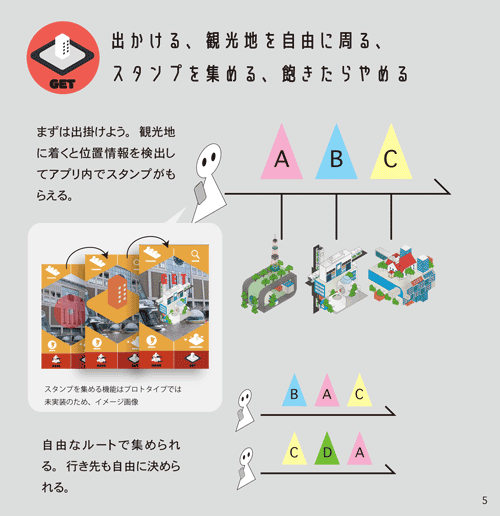
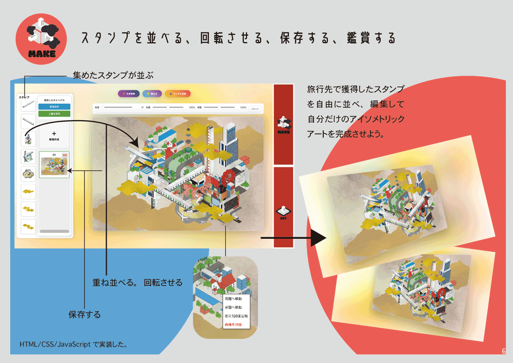
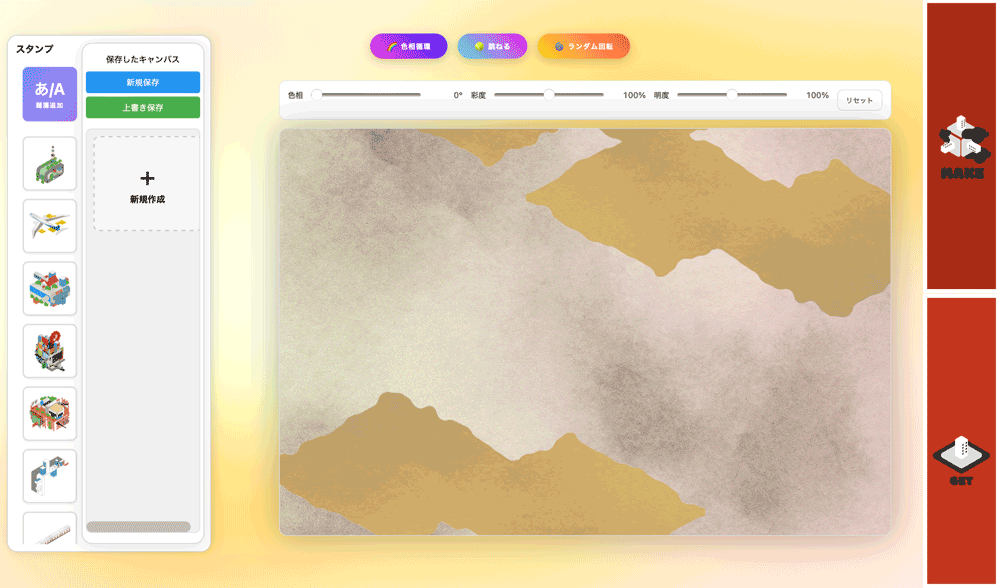
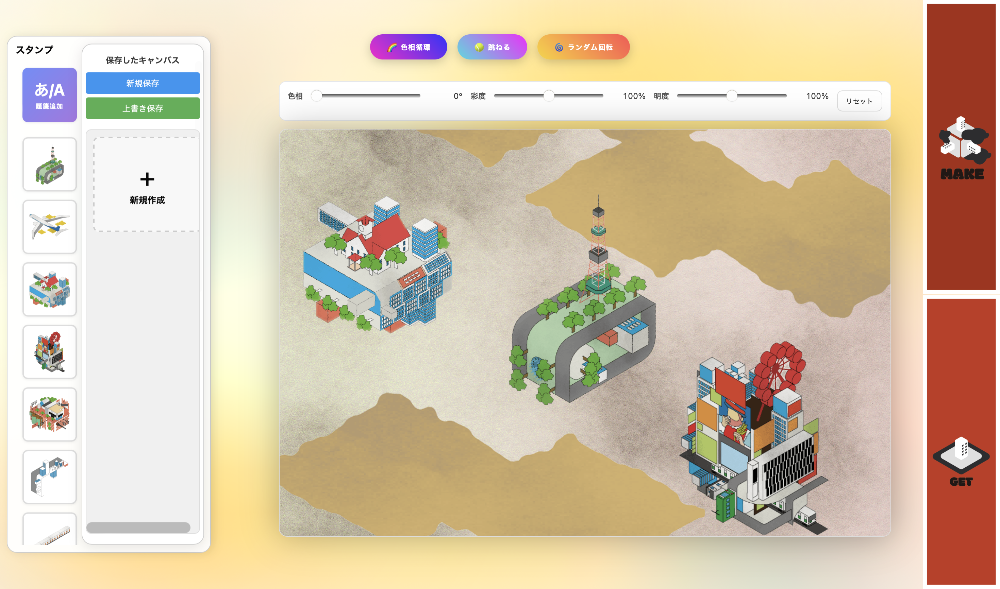
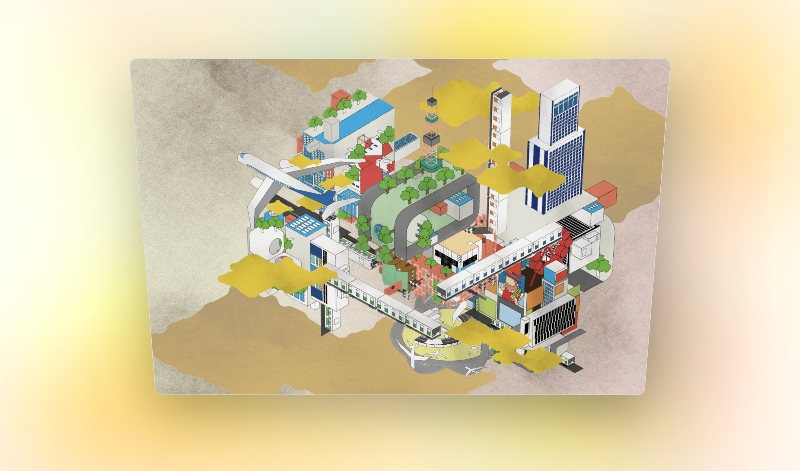
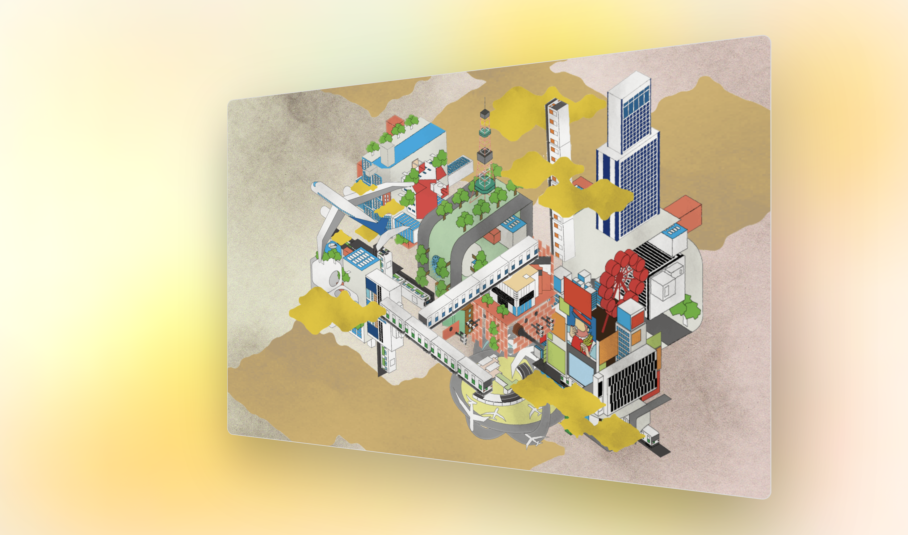

isomeTrip
しばしば旅行に出か
ける機会がある。旅行は楽しくあ
るべきだが、慣れない道中であれ
ば迷い、目的地に遅れて予定通り
に事が運ばず、落ち込むことは誰
しも経験するところだろう。
そして従来のスタンプラリー中に
そのようなアクシデントに見舞わ
れては、取り返しのつかない事態
になる可能性もある。
従来のスタンプラリーの多くは、
スタンプを集めた先に貰える特典
や景品を目的として、スタンプは
あくまで手段として扱われること
が多い。だからスタンプをコンプ
リートすることが前提であり、取
り逃がしが重大な損失になりやす
い。
しかし、スタンプの役割を変える
ことで前述の懸念点を解消できる
ことに加えて、スタンプラリーに
新しい価値を付与できる。スタン
プを押すこと自体を目的ととらえ
ることが鍵だ。そして、スタンプ
に芸術性を加えることでそれが達
成される。その芸術性こそ、「アイ
ソメトリックアート」だ。
アートは、自分で終わりを設定で
きる。もちろん過程の順序も、千
差万別で構わない。スタンプラリー
の常識である「ルート」と「ゴール」
の概念を、アート作品というフィ
ルターを通せば覆すことができる。
どこからスタートしても良い。ど
こで終わっても良い。やめれば、
そこで完成。





